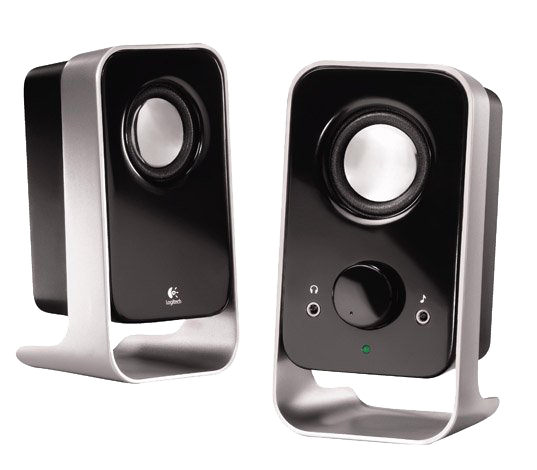

Se denomina bocina a un instrumento compuesto de una pera de goma y una trompeta unidos. Al presionar la pera, el aire sale por la trompeta, creando sonido. Antiguamente se usaba en los automóviles como señal acústica, pero ahora ha sido sustituido por un elemento accionado por energía eléctrica.

Historia y origen
La bocina se inventó en Francia en 1680 y servía tan solo para la caza. Después se introdujo en Alemania y allí se perfeccionó y se aplicó a la música. Para esta se adoptó en Francia en 1730 pero no la introdujeron en la orquesta de la ópera hasta en 1757.
En esta época daba muy pocos sonidos, pero en 1759 un alemán llamado Hampl discurrió que era fácil hacerle producir otros, tapando con la mano una parte del pabellón o campana del instrumento. Este descubrimiento abrió la carrera a artistas hábiles que se
entregaban al estudio de la trompa. Otro alemán llamado Haltenhoft mejoró este instrumento añadiendo una bomba por medio de la cual se afina exactamente, cuando por el calor del aliento se suben las entonaciones.
Tipos de bosinas
Bocinas mono: se refiere a que el sonido emitido se escuchará con baja calidad y desde un solo punto, un ejemplo cercano es el sonido de las estaciones AM de radio.
Bocinas Estéreo: se refiere a que el sonido emitido se escuchará con alta calidad y con un efecto que permite escuchar como si el sonido proviniera de distintos puntos del ambiente, un ejemplo cercano de ello es el sonido de las estaciones FM de radio.
Bocinas 2.1: se refiere a que el sonido emitido se escuchará con alta calidad y con un efecto que permite escuchar como si el sonido proviniera de ambos lados, además de que cuenta con una bocina extra llamada subwoofer que resalta los tonos graves del audio. Son 2 bocinas distribuidas y un subwoofer.
Bocinas 5.1: se refiere a que el sonido emitido se escuchará con alta calidad y con un efecto que permite escuchar como si el sonido proviniera de ambos lados, del frente y detrás, además de que cuenta con una bocina extra llamada subwoofer que resalta los tonos graves del audio. Son 5 bocinas distribuidas y un subwoofer.
Partes de la bocina
Subwoofer: aumenta los tonos graves de los sonidos, dando sensación de potencia.
Bocinas laterales: transmiten el sonido envolvente.
Bocina satélite frontal: transmite sonidos de efectos especiales.